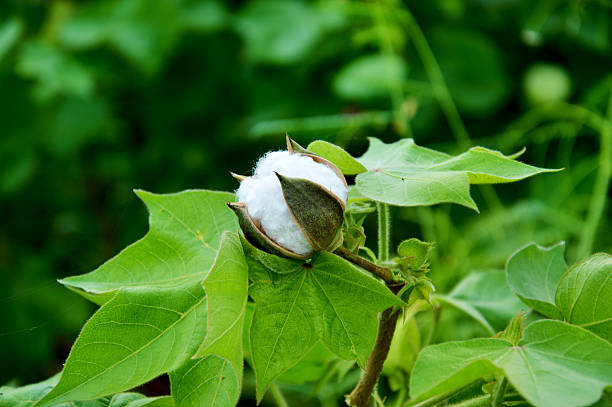

Preventive steps for disease control in cotton Plant:

1.Crop Rotation and Intercropping:
Crop Rotation: Rotate cotton with non-host crops like soybeans, legumes, or cereals to reduce pest and disease buildup in the soil. Avoid planting cotton in the same field for consecutive years to break pest and disease cycles
Intercropping: Intercrop cotton with groundnuts, sunflower, or legumes to improve soil health, reduce pest pressure, and improve overall yield.
2. Weed Control:
Manual Weeding: Regularly remove weeds, particularly during the early stages of cotton growth, to reduce competition for water and nutrients
Herbicides. Apply selective herbicides like Glyphosate or Pendimethalin to control broadleaf weeds and grasses. Use herbicides as a preventive measure rather than after weeds have become established.
3. Time and Method of Planting:
Optimal Planting Time: Plant cotton after the last frost, when soil temperatures are consistently above 18°C, for optimal germination and growth.
Correct Sowing Depth: Plant cotton seeds at the right depth (1-2 cm) to ensure proper germination and to avoid stress conditions like soil crusting, which can hinder seedling emergence.